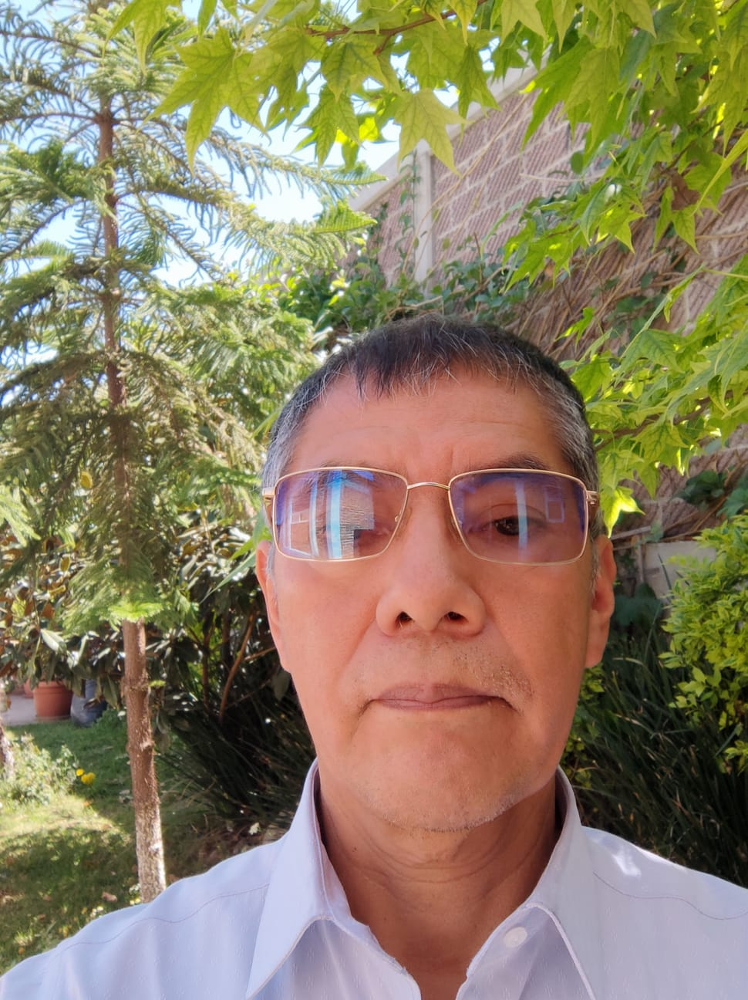

Profesor-Investigador de tiempo completo de la Universidad Autónoma Chapingo. PhD en Agricultural Engineering (Wageningen). Miembro regular de la Academia Mexicana de Ciencias y SNI nivel 2.
PhD en Agricultural Engineering por la Universidad de Wageningen (Países Bajos, 1997–2002). Realizó estancias de investigación en la Universidad Autónoma de Querétaro (2008), la Universidad Humboldt de Berlín (2009, 2012) y la Wageningen University & Research (2014). Desde 1985 es Profesor-Investigador de tiempo completo de la Universidad Autónoma Chapingo, adscrito al Postgrado en Ingeniería Agrícola y Uso Integral del Agua y al Departamento de Ingeniería Mecánica Agrícola.
Becario CONACyT (1997–2002) para estudios de doctorado en el extranjero; beca de repatriación/consolidación institucional (2003) y miembro del Sistema Nacional de Investigadores desde 2005. En 2018 recibió el Premio Estado de México de Ciencia y Tecnología; desde 2020 es miembro regular de la Academia Mexicana de Ciencias, miembro de la ISHS y desde 2024 forma parte del Consejo Editorial de Biosystems Engineering.
Su línea principal es la Ingeniería en Biosistemas: modelación matemática, optimización y control de biosistemas; modelación y control del clima de ambientes agrícolas controlados (invernaderos, fábricas de plantas, secadores solares, biorreactores); modelación del crecimiento de cultivos en invernadero y campo abierto, y aplicación de Inteligencia Artificial en la Agricultura.
Área: Ciencias de Agricultura, Agropecuarias, Forestales y de Ecosistemas — Ingeniería Agrícola (Mecánica Agrícola).